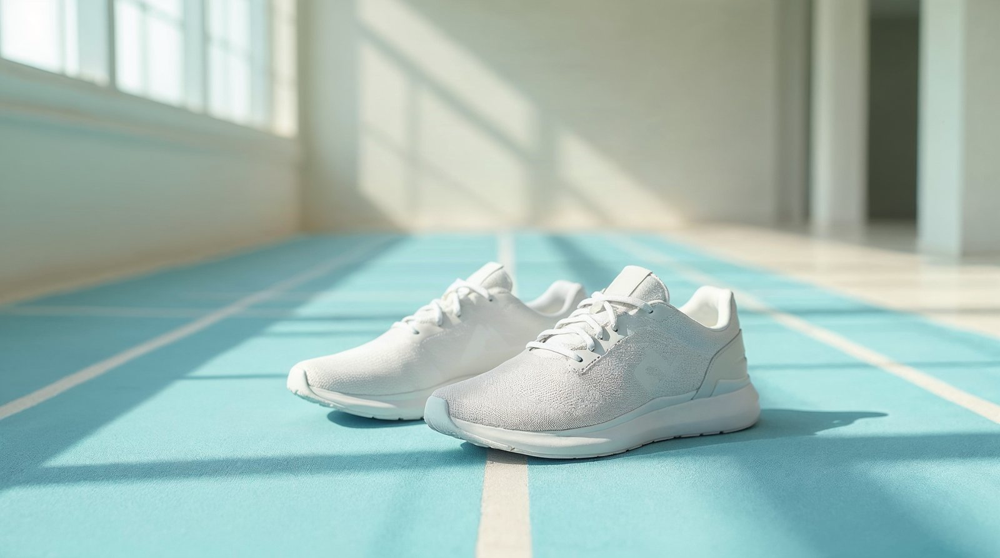
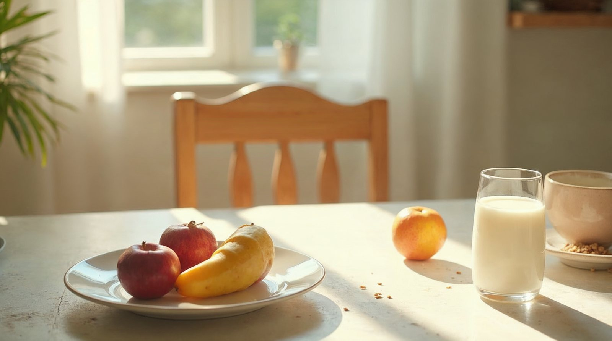

이종호 한의사 감수좋은꿈참사랑한의원 대표원장 (한의사 면허번호 19769)발행 2026-11-26 · 수정 2026-11-26
이 글의 차례
토요일 오후, 축구 교실에서 돌아온 아이가 신발을 벗자마자 발뒤꿈치를 감싸 쥡니다. 거실을 걸어가는 모습을 보니 뒤꿈치를 바닥에 대지 않고 앞꿈치로 콩콩 걷습니다. 물어보면 "뛸 때만 아파"라고 하는데, 다음 주에도, 그다음 주에도 같은 모습이 되풀이됩니다.
부모님은 처음에는 신발이 안 맞나 싶다가, 점점 걱정이 커집니다. 뼈에 금이 간 건 아닌지, 성장판에 문제가 생긴 건 아닌지 마음이 쓰이십니다. 진료실에서 이런 이야기를 들으면 저는 먼저 아이가 요즘 얼마나 뛰는지, 어떤 신발을 신는지부터 여쭙니다.
성장기 아이의 발뒤꿈치 통증 가운데 가장 흔한 것이 세버병입니다. 의학 용어로는 종골 골단염이라고도 부릅니다. 이름에 '병'이 붙어 있어 무겁게 들리지만, 구조를 이해하고 운동량과 신발을 조절하면 아이와 함께 충분히 다룰 수 있는 경우가 많습니다.
이 글에서는 세버병이 어떤 상태인지, 왜 생기는지, 다른 발뒤꿈치 통증과 어떻게 구분하는지, 집에서 무엇을 해 볼 수 있는지, 한의원에서는 무엇을 함께 살피는지를 차례로 정리해 보겠습니다.
세버병은 어떤 상태인가요
발뒤꿈치뼈 뒤쪽에는 종아리에서 내려온 아킬레스건이 붙고, 아래쪽에는 발바닥을 받치는 족저근막이 이어집니다. 성장기 아이의 발뒤꿈치뼈 뒤쪽 끝에는 아직 다 굳지 않은 성장판이 있습니다.
뛰고 점프할 때마다 아킬레스건은 이 부분을 위로 당기고, 발바닥은 바닥에 닿는 충격을 아래에서 받습니다. 위에서 당기고 아래에서 부딪히는 힘이 여린 성장판 자리에 되풀이되면서 염증과 통증이 생기는 것이 세버병입니다.
그래서 세버병은 크게 다쳐서 생기기보다 많이 쓰는 데서 생기는 통증에 가깝습니다. 몇 주에 걸쳐 서서히 아파지고, 운동한 날과 운동 직후에 심해졌다가 쉬면 가라앉는 흐름을 보이는 경우가 많습니다.
양쪽 발뒤꿈치가 함께 아픈 아이도 흔합니다. 한쪽만 아프다가 나중에 반대쪽까지 아파지기도 해서, 양쪽을 모두 살펴봅니다. 평소 많이 디디는 쪽 발이 먼저 아픈 아이가 많아서, 공을 주로 차는 발과 도약할 때 디디는 발도 함께 여쭙습니다.
왜 운동을 많이 하는 성장기 아이에게 잘 생길까요
키가 크는 시기에는 뼈가 먼저 자라고 종아리 근육과 아킬레스건은 그 길이를 늦게 따라갑니다. 그래서 가만히 서 있어도 아킬레스건이 발뒤꿈치를 팽팽하게 당기고 있는 상태가 됩니다. 발목을 위로 꺾는 동작이 뻣뻣한 아이가 많은 것도 그래서입니다.
여기에 운동량이 더해집니다. 축구, 농구, 육상, 줄넘기, 태권도처럼 뛰고 착지하는 운동은 발뒤꿈치에 충격을 계속 줍니다. 딱딱한 운동장이나 체육관 바닥, 밑창이 얇은 축구화나 실내화를 신고 오래 뛰면 그 충격은 더 커집니다.
새 학기에 운동부에 들어갔거나, 방학 동안 매일 운동했거나, 새 축구화로 바꾼 무렵에 시작되는 경우가 많습니다. 운동량이 갑자기 늘어난 시기와 키가 쑥 자란 시기가 겹치면 통증이 드러나기 쉽습니다.
발 모양도 영향을 줍니다. 발이 안쪽으로 많이 무너지는 평발 경향이 있거나, 반대로 아치가 높아 충격을 잘 흡수하지 못하는 발이라면 발뒤꿈치에 실리는 부담이 달라질 수 있습니다.
다른 발뒤꿈치 통증과는 무엇이 다른가요
아이가 발이 아프다고 할 때 아픈 자리와 아픈 때를 나눠 보면 방향이 잡힙니다.
- 발뒤꿈치 뒤쪽과 양옆을 손가락으로 꼭 쥐듯 누르면 아프다: 세버병을 먼저 생각합니다
- 아침 첫걸음에 발바닥 안쪽이 찌릿하다: 족저근막 쪽 통증을 함께 봅니다
- 발뒤꿈치 위 힘줄이 붓고 아프다: 아킬레스건 쪽 문제를 함께 봅니다
- 밤에 양쪽 다리가 번갈아 아프고 낮에는 멀쩡하다: 성장통을 함께 생각합니다
세버병은 낮에 뛰고 난 뒤 아픈 경우가 많고, 아침에 일어날 때는 상대적으로 덜한 아이가 많습니다. 반대로 쉬어도 계속 아프거나, 밤에 잠에서 깰 만큼 아프거나, 발뒤꿈치가 붉게 붓는다면 다른 원인을 먼저 확인해야 합니다.
집에서 해 볼 수 있는 간단한 확인
진료실에 오시기 전 집에서 몇 가지를 살펴보시면 상태를 가늠하는 데 도움이 됩니다. 아이가 많이 아파하면 바로 멈춰 주세요.
- 발뒤꿈치 양옆을 엄지와 검지로 살짝 쥐었을 때 아픈지
- 까치발로 열 번 섰다 내려올 때 아픈지
- 벽을 짚고 서서 무릎을 편 채 종아리를 늘릴 때 양쪽 차이가 있는지
- 신발 밑창 뒤꿈치가 한쪽으로 많이 닳았는지
아이가 신는 신발들을 한자리에 모아 밑창을 살펴보는 것도 좋은 방법입니다. 뒤꿈치 바깥쪽이나 안쪽이 유난히 닳아 있다면 걸음걸이와 발 모양을 함께 살펴볼 단서가 됩니다.
운동을 쉬어야 하나요
많은 부모님이 운동을 완전히 그만두게 해야 하는지 물으십니다. 대부분은 완전히 끊기보다 양과 강도, 바닥과 신발을 조절하는 쪽으로 이야기합니다.
기준은 통증의 흐름입니다. 운동 중 불편이 가볍고 다음 날 아침에 거의 가라앉는다면 시간을 줄여 이어 갈 수 있습니다. 운동 중 절뚝거리거나 까치발로 뛰고, 다음 날까지 통증이 남는다면 뛰는 운동은 잠시 쉬고 수영이나 자전거처럼 발뒤꿈치 충격이 적은 활동으로 바꿉니다.
통증이 가라앉으면 걷기, 가벼운 조깅, 방향 바꾸며 뛰기, 점프 순으로 며칠씩 단계를 밟아 돌아갑니다. 다음 날 아침 통증이 다시 올라오면 한 단계 전으로 돌아가면 됩니다. 코치나 체육 선생님께도 상황을 알려 두시면 훨씬 수월합니다.

신발과 바닥은 어떻게 고르나요
세버병이 있는 아이에게 신발은 생각보다 큰 몫을 합니다. 뒤꿈치 부분에 쿠션이 있고, 뒤축이 단단하게 발뒤꿈치를 감싸 주는 운동화가 좋습니다. 밑창이 너무 얇거나 납작한 신발은 충격을 그대로 전달합니다.
뒤꿈치를 살짝 높여 주는 쿠션 깔창을 쓰면 아킬레스건의 당김이 조금 줄어 편하다는 아이도 있습니다. 축구화처럼 밑창이 얇은 신발은 경기 시간에만 신고, 오가는 길과 연습 전후에는 쿠션 있는 운동화로 갈아 신는 것도 방법입니다.
집 안에서 맨발로 딱딱한 마룻바닥을 오래 뛰어다니는 습관도 살펴봅니다. 통증이 있는 동안은 실내에서도 쿠션 있는 실내화를 신기는 것이 도움이 될 수 있습니다.
발이 빨리 자라는 시기에는 신발이 금세 작아집니다. 작아진 신발은 뒤꿈치를 누르고 걸음을 바꾸기 때문에, 계절이 바뀔 때마다 발 길이를 재고 엄지발가락 앞에 손가락 한 마디 정도 여유가 있는지 확인해 주세요. 물려받은 신발은 밑창이 이미 한쪽으로 닳아 있을 수 있어 통증이 있는 동안은 피하는 편이 좋습니다.

부모님이 함께 챙겨 주시면 좋은 것
아이들은 친구들과 계속 뛰고 싶어서 통증을 작게 말하기도 하고, 반대로 하기 싫은 운동이 있는 날 크게 말하기도 합니다. 그래서 말보다 행동을 지켜보시는 것이 정확할 때가 많습니다.
운동하고 온 날 까치발로 걷는지, 계단을 내려올 때 한 발씩 조심스레 디디는지, 신발을 벗자마자 발뒤꿈치를 문지르는지를 봐 주세요. 이런 모습이 줄어드는 것이 통증이 가라앉는 흐름을 보여 주는 좋은 기준이 됩니다.
아이가 아파서 운동을 쉬게 되면 속상해하는 경우가 많습니다. 쉬는 것도 몸을 키우는 과정이라고 말해 주시고, 그 시간에 할 수 있는 스트레칭이나 수영처럼 다른 즐거움을 함께 찾아 주시면 아이가 덜 조급해합니다.
좋아졌다가 다시 아플 때는 어떻게 하나요
세버병은 성장이 이어지는 동안 좋아졌다 나빠졌다를 되풀이하는 경우가 흔합니다. 키가 다시 크는 시기, 시합이 몰린 시기, 새 신발로 바꾼 시기에 통증이 되살아나기 쉽습니다.
다시 아파졌다고 처음부터 다시 시작하는 것은 아닙니다. 지난번에 도움이 되었던 방법, 즉 운동량을 한 단계 낮추고, 종아리 스트레칭과 쿠션 깔창을 다시 챙기면 대개 지난번보다 빨리 자리를 잡습니다. 그래서 처음 아팠을 때의 기록을 버리지 말고 모아 두시길 권합니다.
먼저 이렇게 여쭙니다
처음 오시면 아이와 부모님께 대략 이런 순서로 여쭙니다. 아이가 직접 대답할 수 있도록 미리 이야기 나눠 오시면 좋습니다.
- 일주일에 어떤 운동을, 몇 번, 어떤 바닥에서 하나요?
- 언제부터 아팠고, 그 무렵 운동량이나 신발이 바뀌었나요?
- 운동 중, 운동 뒤, 다음 날 아침 가운데 언제 가장 아픈가요?
- 한쪽만 아픈가요, 양쪽 모두 아픈가요?
- 최근 높은 곳에서 뛰어내리거나 발을 세게 디딘 일이 있었나요?
- 잠은 몇 시간 자고, 아침밥은 먹고 다니나요?
평소 신는 운동화를 한 켤레 들고 오시면 밑창이 닳은 모양을 함께 볼 수 있어 도움이 됩니다.
일상에서 먼저 해 볼 수 있는 것
세버병 관리의 중심은 발뒤꿈치를 당기는 힘과 부딪히는 힘을 함께 줄이는 것입니다. 매일 할 수 있는 작은 습관부터 시작해 보세요.
- 운동 전후 종아리 스트레칭을 무릎 편 자세와 굽힌 자세로 각각 20~30초씩
- 운동 뒤 발뒤꿈치에 얇은 수건으로 감싼 차가운 찜질 10분 남짓
- 쿠션 있는 운동화와 뒤꿈치 쿠션 깔창 쓰기
- 연달아 뛰는 날 사이에 쉬는 날 넣기
- 맨발로 딱딱한 바닥에서 뛰지 않기
- 수건을 발가락으로 집어 올리기처럼 발바닥 작은 근육 깨우기
종아리 스트레칭은 벽을 짚고 아픈 발을 뒤로 빼서 발뒤꿈치를 바닥에 붙인 채 몸을 앞으로 천천히 기울이는 방법이 무리가 적습니다. 반동 없이 당기는 느낌까지만 하고, 아프면 범위를 줄입니다.
한의원에서 함께 살필 수 있는 경우
- 운동 뒤 발뒤꿈치 통증이 며칠씩 이어지는 경우
- 종아리와 발바닥이 유난히 굳어 스트레칭이 잘 되지 않는 경우
- 통증 때문에 까치발로 걷거나 걸음이 한쪽으로 치우친 경우
- 잠과 식사가 부족해 쉽게 지치고 회복이 더딘 경우
- 다시 운동을 늘릴 때 순서와 양을 함께 정하고 싶은 경우
좋은꿈참사랑한의원에 오시면 먼저 아래 '먼저 확인이 필요한' 신호가 없는지부터 봅니다. 그다음 발뒤꿈치와 종아리, 발바닥을 직접 만져 보고, 걷는 모습과 까치발 서기를 함께 봅니다. 필요하다고 판단되면 족저 검사로 발바닥이 바닥에 닿는 모양을 살펴보기도 합니다.
진찰한 내용을 바탕으로 침이나 온열 관리, 집에서 할 스트레칭과 신발 조언 가운데 지금 상태에 맞는 것을 정합니다. 아이의 체격과 겁내는 정도를 고려해 방법과 강도를 조절합니다. 한약은 잠과 식사, 피로가 함께 문제일 때 아이가 먹고 있는 약을 확인한 뒤 신중히 상의합니다.
뼈 사진이 필요해 보이거나 다른 원인이 의심되면 정형외과 진료를 함께 권합니다. 한의원 진료는 아이가 좋아하는 운동을 이어 가는 동안 회복을 곁에서 돕는 역할이라고 생각해 주시면 됩니다.
이렇게 기록해 오시면 상담이 쉬워집니다
아이의 통증은 날마다 달라서 짧은 기록이 큰 도움이 됩니다. 2주 정도 달력에 간단히 표시해 보세요.
- 운동한 날, 운동 종류, 뛴 바닥과 신은 신발
- 운동 중, 운동 뒤, 다음 날 아침 통증을 0~10으로
- 까치발로 걷거나 절뚝거린 날
- 스트레칭, 찜질, 깔창을 쓴 날
- 잠든 시각과 일어난 시각
기록을 나란히 놓고 보면 어떤 운동, 어떤 바닥, 어떤 신발 뒤에 더 아픈지가 보입니다. 그 흐름이 운동량과 신발을 다시 정하는 출발점이 됩니다.
성장기 발뒤꿈치와 함께 지내는 법
세버병은 운동을 좋아하고 빠르게 자라는 아이에게 잘 생기는 통증입니다. 아이가 뭔가 잘못해서 생긴 일이 아니라는 점을 먼저 알려 주세요. 아픈 발 때문에 주눅 들지 않도록 하는 것도 회복의 한 부분입니다.
이번 주에는 종아리 스트레칭 하나와 쿠션 있는 신발, 이 두 가지만 챙겨 보세요. 다음에 오시면 2주 기록을 함께 펼쳐 놓고 다음 걸음을 정하겠습니다.
이런 증상은 먼저 확인이 필요합니다
- 발뒤꿈치가 붉게 붓고 뜨거우며 열이 나거나 쉬어도 밤까지 계속 아픈 경우
- 높은 곳에서 뛰어내리거나 넘어진 뒤 발을 전혀 디디지 못하거나 모양이 달라 보이는 경우
이런 신호가 있으면 한의원보다 가까운 병원이나 응급실을 먼저 찾으세요.
함께 읽으면 좋은 글
- 아이가 밤마다 다리가 아프다고 할 때, 성장통인지 어떻게 살피나요?
- 발뒤꿈치 한가운데가 멍든 것처럼 아픈 지방패드 통증은 족저근막염과 어떻게 다르고 어떻게 살피나요?
- 발뒤꿈치 위 아킬레스건이 아침마다 뻣뻣하고 아플 때 체외충격파는 어떻게 살피나요?
- 전신 체형 검사와 족저 검사는 무엇을 살피나요?
- 운동하고 이틀째에 더 쑤시는 지연성 근육통은 왜 생기고, 회복은 어떻게 살피나요?

여쭙는 것
- 일주일에 어떤 운동을, 몇 번, 어떤 바닥에서 하나요?
- 언제부터 아팠고, 그 무렵 운동량이나 신발이 바뀌었나요?
- 운동 중, 운동 뒤, 다음 날 아침 가운데 언제 가장 아픈가요?
생활에서 해 볼 것
- 운동 전후 종아리 스트레칭을 무릎 편 자세와 굽힌 자세로 각각 20~30초씩
- 운동 뒤 발뒤꿈치에 얇은 수건으로 감싼 차가운 찜질 10분 남짓
- 쿠션 있는 운동화와 뒤꿈치 쿠션 깔창 쓰기
한의원에서 함께 살필 것
- 운동 뒤 발뒤꿈치 통증이 며칠씩 이어지는 경우
- 종아리와 발바닥이 유난히 굳어 스트레칭이 잘 되지 않는 경우
- 통증 때문에 까치발로 걷거나 걸음이 한쪽으로 치우친 경우
먼저 확인이 필요한 신호
- 발뒤꿈치가 붉게 붓고 뜨거우며 열이 나거나 쉬어도 밤까지 계속 아픈 경우
- 높은 곳에서 뛰어내리거나 넘어진 뒤 발을 전혀 디디지 못하거나 모양이 달라 보이는 경우
한눈에 보는 표
| 구분 | 핵심 |
|---|---|
| 여쭙는 것 | 일주일에 어떤 운동을, 몇 번, 어떤 바닥에서 하나요? 언제부터 아팠고, 그 무렵 운동량이나 신발이 바뀌었나요? |
| 생활에서 해 볼 것 | 운동 전후 종아리 스트레칭을 무릎 편 자세와 굽힌 자세로 각각 20~30초씩 운동 뒤 발뒤꿈치에 얇은 수건으로 감싼 차가운 찜질 10분 남짓 |
| 한의원에서 함께 살필 것 | 운동 뒤 발뒤꿈치 통증이 며칠씩 이어지는 경우 종아리와 발바닥이 유난히 굳어 스트레칭이 잘 되지 않는 경우 |
| 먼저 확인이 필요한 신호 | 발뒤꿈치가 붉게 붓고 뜨거우며 열이 나거나 쉬어도 밤까지 계속 아픈 경우 높은 곳에서 뛰어내리거나 넘어진 뒤 발을 전혀 디디지 못하거나 모양이 달라 보이는 경우 |
자주 묻는 질문
세버병이 있으면 키 성장에 문제가 생기나요?
발뒤꿈치뼈 끝 성장판 자리의 통증이라 키 성장 전체를 막는 것으로 보지는 않습니다. 다만 아파서 잠을 설치거나 활동이 줄면 회복이 늦어질 수 있으니 잠과 식사를 함께 챙겨 주세요.
깔창은 계속 써야 하나요?
통증이 있는 동안 발뒤꿈치 부담을 덜어 주는 용도로 씁니다. 통증이 가라앉고 운동량이 안정되면 아이 발에 맞춰 계속 쓸지를 다시 정하시면 됩니다.
발뒤꿈치가 아픈데 줄넘기 숙제를 해도 되나요?
줄넘기는 발뒤꿈치 충격이 큰 운동입니다. 통증이 있는 동안은 횟수를 줄이거나 다른 활동으로 바꿀 수 있는지 선생님께 상황을 알려 보시길 권합니다.
아이도 침 치료를 받을 수 있나요?
진찰 뒤 아이의 상태와 겁내는 정도를 보고 방법을 정합니다. 침이 무섭다면 온열 관리나 스트레칭 지도처럼 부담이 적은 방법부터 시작할 수 있습니다.
세버병은 커서도 계속되나요?
발뒤꿈치 성장판이 닫히는 시기가 지나면 대개 함께 가라앉습니다. 그 전까지는 운동량이 늘 때 다시 아플 수 있어 스트레칭과 신발을 꾸준히 챙기는 것이 좋습니다.
좋은꿈참사랑한의원은 재진 때 지난번 이야기부터 이어서 여쭙니다. 진료시간과 예약은 오시는 길에서 확인하세요.
어디서 상담받을 수 있나요?
좋은꿈참사랑한의원은 서울 동작구 만양로2길 2 신성빌딩 3층·5층(서울 동작구 상도동, 7호선 상도역 3번 출구 근처)에 있습니다. 한의사 3명(이종호 대표원장, 조영기 수석진료원장, 정원영 진료원장)이 진료합니다. 진료시간은 평일 09:30~20:00(점심 13:00~14:00), 토·일·공휴일 09:30~15:00이며, 방문 전 전화로 확인을 권합니다. 예약은 네이버 예약, 카카오톡 상담, 전화 02-815-7510로 받습니다.
이 글은 일반적인 건강 정보이며 개인의 진단이나 치료를 대신하지 않습니다. 증상이 있거나 복용 중인 약이 있다면 진료를 통해 확인하세요. 치료 효과는 개인마다 다를 수 있습니다.
작성 기준: 일반적으로 알려져 있는 건강 정보를 참고해 정리했습니다(대표원장 감수). 증상 기록은 1~2주 동안 하루 1회, 비슷한 시간에 적어 오시면 지난 상태와 비교하기 쉽습니다.